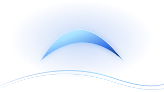
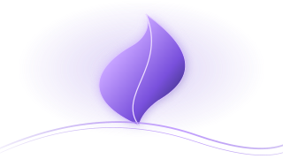

Intelligence evolves.
Meet the Neuravale family.

Arc
Latest modelOur latest conversational preview.

Ember
First generationOur first conversational model.

Rise
Research archiveAn earlier research generation.
Early conversational models. Answers may be inaccurate.
Behind the technology